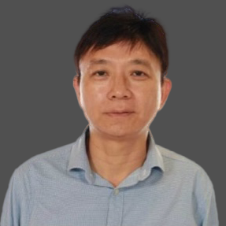
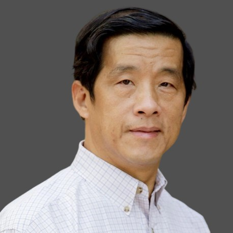
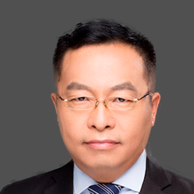
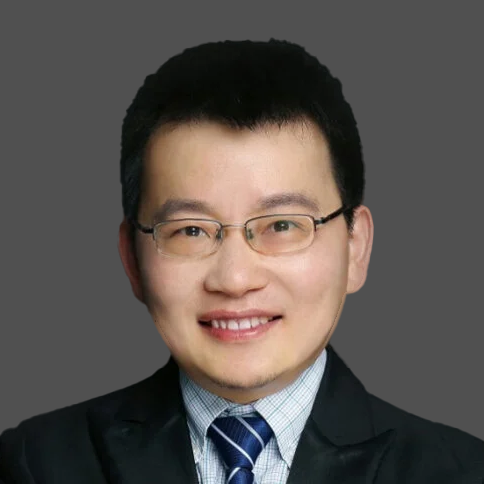
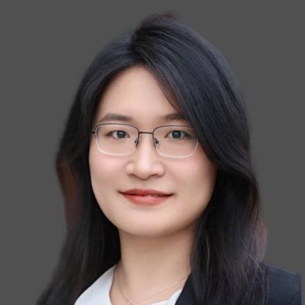
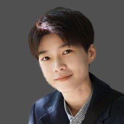

-

Yew-Soon OngNanyang Technological University, SingaporeProf. Yew-Soon Ong is currently an Endowed Yidan Professor in Artificial Intelligence at the College of Computing & Data Science, Nanyang Technological University (NTU), Singapore, Distinguished AI Fellow (Joint Appointment) of the Singapore's Agency for Science, Technology and Research (A*STAR), Professor (Joint Appointment) of the National Institute of Education, Singapore. He was President's Chair Professor in Computer Science at the College of Computing & Data Science (2019-2026), Chief Artificial Intelligence Scientist of A*STAR (2019-2026), Chair of the School of Computer Science and Engineering, Nanyang Technological University (2016-2019), Director of the Singtel-NTU Cognitive & Artificial Intelligence Joint Lab (SCALE@NTU) (2017-2025), Director of Data Science and AI Research Centre (2017-2020), Director of the Centre for Computational Intelligence/Computational Intelligence Laboratory (2008-2015) and Programme Principal Investigator of the Data Analytics & Complex System Programme in the Rolls-Royce@NTU Corporate Lab (2013-2017).
He received his Bachelor's and Master's degrees from Nanyang Technological University and subsequently his PhD on Artificial Intelligence in Complex Engineering Design from the University of Southampton, United Kingdom. He is a Fellow of IEEE, Fellow of the Singapore national academy of engineering, founding Editor-In-Chief of the IEEE Transactions on Emerging Topics in Computational Intelligence, founding Technical Editor-In-Chief of Memetic Computing Journal (Springer), Senior Editor of IEEE Transactions on Neural Network & Learning Systems, Associate Editor of IEEE Transactions on Evolutionary Computation, IEEE Transactions on Cybernetics, IEEE Transactions on Artificial Intelligence, and chief co-editor of Book Series on Studies in Adaptation, Learning, and Optimization.
He has received five IEEE outstanding paper awards and was listed as a Thomson Reuters highly cited researcher and among the World's Most Influential Scientific Minds. He has published over 300 referred papers at ICML, ICLR, NeurIPS, IJCAI, AAAI, CVPR, KDD, WWW, AAMAS and ACM/IEEE Transactions. In AI, he has been a keynote speaker or senior area chair or area chair of AAAI, IJCAI, ICLR, ICML, NeurIPS, KDD, ICONIP and others.
BiographyTopic & AbstractTitleTBDAbstractTBD -

Gary G. YenSichuan University, ChinaProf. Gary G. Yen is a Chair Professor at Sichuan University, and formerly held an Endowed Chair at Oklahoma State University. He received his Ph.D. degree in electrical and computer engineering from the University of Notre Dame in 1992. He was a Regents Professor in the School of Electrical and Computer Engineering, Oklahoma State University. He recently joined Sichuan University, College of Computer Science as a Chair Professor.
His research interests include intelligent control, computational intelligence, evolutionary multiobjective optimization, conditional health monitoring, signal processing, and their industrial/defense applications. Gary was an associate editor of the IEEE Transactions on Neural Networks, IEEE Transactions on Evolutionary Computation, IEEE Transactions on Emerging Topics on Computational Intelligence, and IEEE Control Systems Magazine during 1994-1999, and of the IEEE Transactions on Control Systems Technology, IEEE Transactions on Systems, Man and Cybernetics (Parts A and B) and IFAC Journal on Automatica and Mechatronics during 2000-2010. He currently serves as an Associate Editor of IEEE Transactions on Cybernetics and IEEE Transactions on Artificial Intelligence, and will serve as the Editor-in-Chief of IEEE Transactions on Evolutionary Computation (TEVC) from 2027 onward.
He served as Vice President for the Technical Activities, IEEE Computational Intelligence Society in 2004-2005 and was the founding editor-in-chief of the IEEE Computational Intelligence Magazine, 2006-2009. He was elected to serve as the President of the IEEE Computational Intelligence Society in 2010-2011 and is elected as a Distinguished Lecturer for the term 2012-2014, 2016-2018, 2021-2023, and 2025-2027. He received Regents Distinguished Research Award from OSU in 2009, 2011 Andrew P Sage Best Transactions Paper award from IEEE Systems, Man and Cybernetics Society, 2013 Meritorious Service award from IEEE Computational Intelligence Society and 2014 Lockheed Martin Aeronautics Excellence Teaching award. He is a Fellow of IEEE, IET and IAPR.
BiographyTopic & AbstractTitleTBDAbstractTBD
-

Tiejun HuangPeking University, ChinaProf. Tiejun Huang is a Professor at the School of Computer Science, Peking University, Director of the State Key Laboratory of Multimedia Information Processing, and Chairman of the Beijing Academy of Artificial Intelligence (BAAI). His research interests include intelligent visual information processing and brain-inspired intelligence.
As a principal drafter, he contributed to the development of three generations of China’s national video coding standards. He pioneered scene-based video coding, achieving a two-fold improvement in coding efficiency, and received the Second Prize of the National Science and Technology Progress Award in 2012. He initiated the field of visual feature compression, improving transmission efficiency by an order of magnitude, and received the Second Prize of the National Technological Invention Award in 2017. He also proposed the principle of spike-based continuous photography, enabling thousand-fold acceleration in imaging and machine vision. This work received the Gold Medal with the Congratulations of the Jury at the 2024 Geneva International Exhibition of Inventions and the First Prize of the 2025 Engineering Technology Award of the Ministry of Education.
Prof. Huang participated throughout the proposal, drafting, and implementation of China’s New Generation Artificial Intelligence Development Plan. During his tenure as the Founding President of the Beijing Academy of Artificial Intelligence, he took the lead in launching research and development on large-scale models, with related work on multimodal large models published in Nature. He has published more than 400 academic papers, been granted more than 200 invention patents, and led the development of more than 20 standards. His honors include the 2022 Outstanding Contribution Award for China Standards Innovation, the 2022 Wu Wenjun Outstanding Contribution Award of the Chinese Association for Artificial Intelligence, and the 2024 Innovation Achievement Award of the Chinese Institute of Electronics. He is a recipient of the National Science Fund for Distinguished Young Scholars, a Changjiang Scholar, and a National Leading Talent in Scientific and Technological Innovation. He is also a Fellow of the China Computer Federation, the Chinese Association for Artificial Intelligence, the China Society of Image and Graphics, and the Chinese Institute of Electronics.
BiographyTopic & AbstractTitleTBDAbstractTBD -

Gang PanZhejiang University, ChinaProf. Gang Pan is a distinguished professor in the College of Computer Science and Technology at Zhejiang University, where he also serves as the Director of the State Key Laboratory of Brain-Machine Intelligence. He earned his B.Eng. and Ph.D. degrees from Zhejiang University in 1998 and 2004, respectively.
Prof. Pan's research interests include brain-machine interfaces, brain-inspired computing, artificial intelligence, and pervasive computing. He has published more than 200 refereed publications, and has more than 60 patents granted. Dr. Pan has received numerous honors, including the NSFC Distinguished Young Scholars, the IEEE TCSC Award for Excellence (Middle Career Researcher), and the CCF-IEEE CS Young Scientist Award.
Additionally, he has been recognized with the National Science and Technology Progress Award, two test-of-time paper awards, and multiple best paper awards. He serves as an associate editor for multiple prestigious journals such as IEEE Transactions on Neural Networks and Learning Systems.
BiographyTopic & AbstractTitleTBDAbstractTBD -

Sha ZhaoZhejiang University, ChinaProf. Sha Zhao is a Professor and Doctoral Supervisor at the College of Computer Science and Technology / The State Key Lab of Brain-Machine Intelligence, Zhejiang University. She also serves as the Deputy Secretary-General of the CCF Technical Committee on Pervasive Computing.
Her research focuses on Brain-Computer Interfaces and Artificial Intelligence, with an emphasis on non-invasive neural signal decoding and closed-loop regulation. She has published over 50 high-quality papers and has received five Best Paper/Award honors, including the ACM UbiComp Best Paper Award (CCF-A; first-authored and the first from China). In 2022, she was honored with the ACM Hangzhou Rising Star Award. She has led several prestigious research projects, including grants from the National Natural Science Foundation of China (General and Youth Programs), the Zhejiang Provincial Natural Science Foundation (Key Program), and sub-projects of STI 2030 Major Projects.
She actively contributes to the academic community as a Program Committee Member for top-tier conferences such as ICLR and NeurIPS, and as a reviewer for leading international journals including TCDS, TNSRE, and JBHI.
BiographyTopic & AbstractTitleTBDAbstractTBD -

Yajing ZhengPeking University, ChinaDr. Yajing Zheng is a Boya Postdoctoral Fellow at Peking University and an Honorary Research Fellow at University College London (UCL), where she works under the guidance of Prof. Karl Friston. She serves as the Deputy Secretary-General of the CSIG Technical Committee on Brain-Inspired Vision. Her research focuses on brain-inspired computing, neuromorphic vision, spiking neural networks, and active inference. She led the development of SpikeCV, an open-source project for spike vision, which received the 2023 OpenI Excellent Project Incubation Award and Excellent Developer Award.
Dr. Zheng serves as an Area Chair for CVPR 2026 and WACV 2027, and as a reviewer for Nature Human Behaviour, NeurIPS, CVPR, ICCV, and ICML. She was recognized as an Outstanding Reviewer at ICCV 2023. She has led several national and municipal research projects and received honors including the CCF Outstanding Doctoral Dissertation Award, Peking University Outstanding Doctoral Dissertation Award, and Peking University Outstanding Postdoctoral Fellow. She has published over 20 papers as first or corresponding author in venues including TPAMI, TIP, Cell Patterns, NeurIPS Spotlight, CVPR Highlight, and AAAI.
BiographyTopic & AbstractTitleTBDAbstractTBD
-
 Jose A. LozanoUniversity of the Basque Country (UPV/EHU) & Basque Center for Applied Mathematics (BCAM), Spain
Jose A. LozanoUniversity of the Basque Country (UPV/EHU) & Basque Center for Applied Mathematics (BCAM), SpainProf. Jose A. Lozano received his M.Sc. degrees in Mathematics (1991) and Computer Science (1992), and his Ph.D. in Computer Science (1998) (Best Engineering Thesis Award) from the University of the Basque Country (UPV/EHU). He is Full Professor in the Department of Computer Science and Artificial Intelligence at UPV/EHU and leads the Intelligent Systems Group. Since 2019 he has served as the Scientific Director of the Basque Center for Applied Mathematics (BCAM). He was named IEEE Fellow in 2021. He has published more than 180 ISI-indexed journal articles, several of them highly cited, and has contributed influential books, edited volumes and special issues in machine learning, evolutionary computation and probabilistic modelling.
His research interests include combinatorial optimization, machine learning, probabilistic graphical models, time-series analysis and applications in fields such as medicine, biology and ecology. He has supervised over 30 PhD theses, many recognized with national and international awards, and has received distinctions such as the Basque Country Research Award (2024) and several best paper awards.
Prof. Lozano has held leading roles in the organization of major conferences, including serving as General Chair of IEEE CEC 2017 and ECML-PKDD 2021, and Program Chair of GECCO 2020. He has served on editorial boards of journals such as IEEE Transactions on Evolutionary Computation, IEEE Transactions on Neural Networks and Learning Systems, Evolutionary Computation and ACM Transactions on Evolutionary Learning and Optimization.
BiographyTopic & AbstractTitleTBDAbstractTBD -
 Bernhard SendhoffHonda Research Institute Europe GmbH (Offenbach), Germany
Bernhard SendhoffHonda Research Institute Europe GmbH (Offenbach), GermanyDr. Bernhard Sendhoff (Fellow, IEEE) received the Ph.D. degree in applied physics from Ruhr-Universitat Bochum, Bochum, Germany, in 1998. He was with Honda Research Institute Europe GmbH, Offenbach, Germany, as a Chief Technology Officer from 2003 to 2010 and President from 2011 to 2017. He has been an Operating Officer with Honda Research and Development Ltd., Tokyo, Japan, since 2017, and CEO of the Global Network Honda Research Institutes since 2019. He is an Honorary Professor with the Technical University of Darmstadt, Darmstadt, Germany. He has authored or coauthored more than 180 scientific publications. He is a Senior Member of ACM and Member of SAE.
BiographyTopic & AbstractTitleTBDAbstractTBD